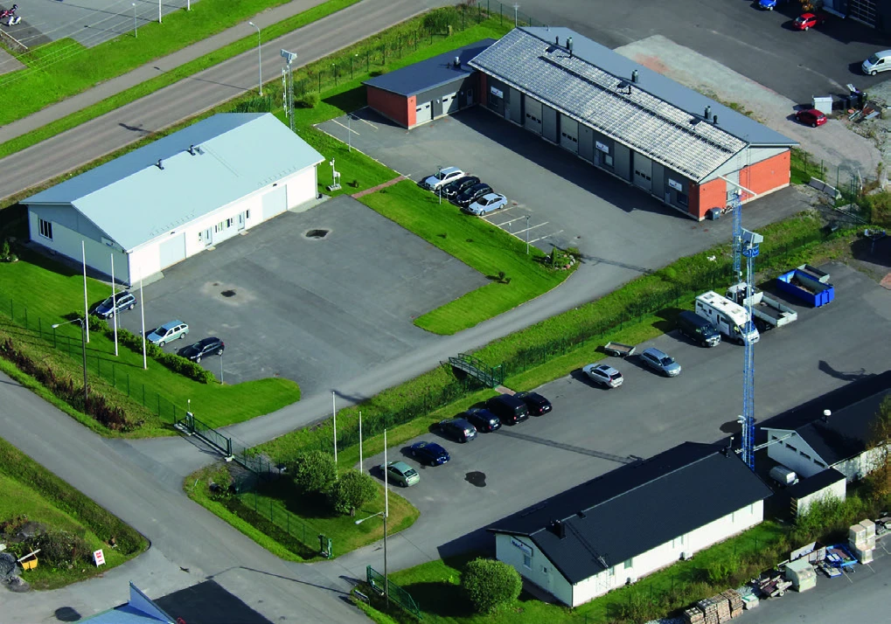
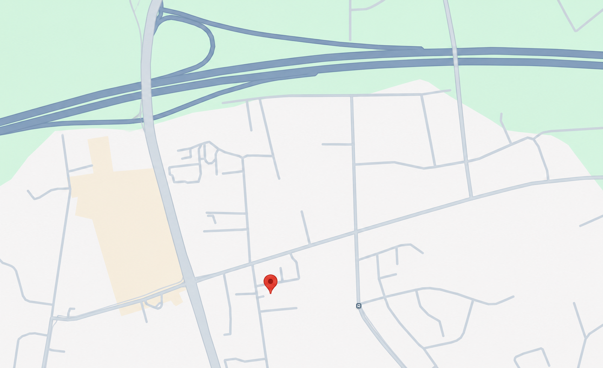

Developing advanced integrated situational awareness systems.
International technology company
Everything you need, in one view.
High-performance systems for complete situational awareness, secure communication and mission-critical operations.
About Navielektro
A technology partner for operational awareness.
Navielektro builds operational systems for organisations that depend on a clear, reliable picture of their environment. For more than 30 years, our solutions have supported civilian and military customers in Finland and internationally, from vessel traffic management to comprehensive situational awareness.
More about Navielektro
Industries
Technology for critical operational environments.
Why Navielektro
Built for reliability in demanding environments.
Certified and security-accredited operations.
Contact
Ready to strengthen your operational awareness?
Talk to our team about new systems, integration projects or long-term support.
Contact usProducts
Products
Explore Navielektro systems, Tactical Display Framework products, sensors, communication tools, weather products and operational modules.
Featured systems
All products
No products match your current search and filters.
Services
Support & Services
Structured support, maintenance and software assurance designed to maximise reliability, performance and operational readiness.
Services
Industries
Industry contexts.
Explore our industry-focused solutions for Safety & Security, Military and Intelligent Transport.
Industries
About
About Navielektro.
Navielektro is a privately owned company specialized in the development and maintenance of situational awareness, cyber-security, surveillance and communication systems for both civilian and military purposes.
Company overview
About Us
Navielektro is a privately owned company specialized in development and maintenance of situational awareness, surveillance and communication systems for both civilian and military purposes. Our operations also include manufacturing and maintenance of sensors.
Navielektro has over ten years of experience developing advanced integrated systems for surveillance purposes. Navielektro's mission is to provide sophisticated systems that are needed in order to enhance the safety of life, be it at sea, on land or in the air. Our goal is to be recognized by our customer as a partner in surveillance and communication in the fields of C2 (Command & Control), VTMS (Vessel Traffic Management Systems), Coastal- and Port Security Systems, RIS (River Information Systems) as well as ITS (Intelligent Transport Systems).
Navielektro actively contributes to the development and standardization of solutions within our area of expertise, and we are currently participating in the development of maritime situational awareness systems as part of joint operations with ITU, IALA and NATO.
Deliveries
Our deliveries so far range from integrated bridge systems, VTS Systems, Tactical Information Systems, VHF Voice Communication Systems, AIS Base Station Networks, Web Portals, Track Fusion and Tracking Systems to single OEM radar site deliveries and specialized consultancy projects within the field of navigation, communication, surveillance and analysis.
Today, Navielektro is the leading supplier of VTS and Coastal Surveillance Systems for the Coast of Finland. The integrated coastal surveillance system that has been built for the Finnish tri-lateral FIMAC agencies is probably one of the largest of its kind in the world today.
During the last few years, Navielektro has also gained foothold as a vendor of Joint Common Operational Picture user interfaces and platforms in Finland. Navielektro has also successfully completed surveillance system deliveries to Europe, Asia and Africa.
Since 1996, Navielektro has focused strongly on development, maintenance and delivery of some of the most critical situational awareness systems in Finland. In the year 2000 our operations with regards to maritime surveillance and vessel traffic management expanded to include general situational awareness services and related software.
We systematically set out to seek the expertise and experience required from abroad, together with the leading agents within the aforementioned fields.
Milestones
Navielektro focuses strongly on the development, maintenance and delivery of critical situational awareness systems in Finland.
Operations expand from maritime surveillance and vessel traffic management to general situational awareness services and related software.
Navielektro supplies vessel traffic management, coastal surveillance and situational awareness systems in Finland and internationally, with deliveries across Europe, Asia and Africa.
Certifications & trust
Why Navielektro.
Careers
Career opportunities
Join the Navielektro team! In this section you'll find our open positions.
Careers
Open positions
Please follow us on Facebook for updates on open positions.
Software Developer
Are you a skillful software developer who does not shy away from new challenges? In that case, you might be exactly the kind of creative genius we are looking for.
Navielektro is a software company that specializes in creating situational awareness systems for maritime surveillance. This means our work is both challenging and rewarding, as we aim to increase safety and security at sea.
We need someone who is interested in solving complicated problems and who isn't afraid to dig deep to get to a solution. We are currently looking for a software engineer with experience in software development, software testing, technical documentation and technical support in order to assist our software engineering team. At Navielektro, you will get to work with interesting challenges within the civilian and defence sectors.
We work within a low hierarchy and with a small team, which means the working environment is relaxed with a no-nonsense approach. Your responsibilities will be varied and interesting, so you will get to wear a lot of different hats (figuratively, but hey, we have nothing against hats). We offer you the possibility to be part of a skillful team of experienced software professionals. If you are a strong team player who has a genuine interest in technology and who is eager to learn, we urge you to apply for a position at Navielektro.
Your tasks will include:
- Developing new functional items for our situational awareness software
- Developing extensions to our existing software
- Supporting systems engineering by conducting software testing and deployment
- Creation and maintenance of user and technical documentation
- Supporting customers with operation and maintenance
- Occasional technical and operational training of customer representatives
- Supporting general quality assurance and security-related processes
- Traveling to customer sites both domestically and abroad to support installation, training, integration, testing, and demonstration
Required skills and experience:
- B.Sc. or M.Sc. degree in computer science, or related information science degree with 0–5 years of software development experience (people in the final year of their studies are also considered eligible)
- You should be self-motivated and work well both individually and in a team environment
- Skills in the Java programming language; knowledge of C/C++ earns you extra points
- Demonstrated skills of working with an automated software testing environment
- Technical knowledge of the Windows and Linux operating systems
- General knowledge of networking environments
- A strong command of the Swedish language is desired, but English and Finnish are required (documentation is to be written mostly in English)
References
Selected projects.
Navielektro systems support civilian and defence operations in demanding environments.
News
News and updates.
Company announcements, product documentation updates and other news from Navielektro.
Contact
Contact Navielektro.
Reach Navielektro directly by email, phone or social media, and find our office location below.
Contact details
Reach us directly.
Navielektro Ky
Hallimestarinkatu 11
20780 Kaarina
Finland
Navielektro Ky
P.O. Box 137
FIN-20781 Kaarina
Finland
Personnel: firstname.lastname@navielektro.fi

Map data © OpenStreetMap contributors
Follow us